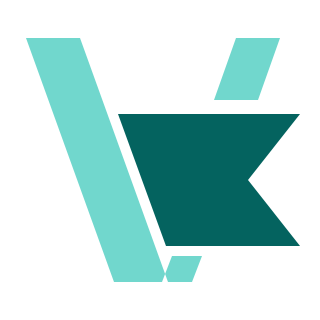
01 / CLOSEST TO YOUR SKETCH
Splice
Broad scissor blades. A single notched film strip.
The simplest reading of your original silhouette.
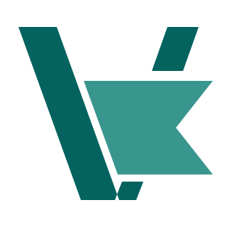
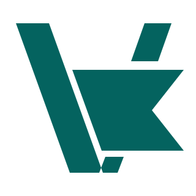
Virtual Cut
VIRTUAL CUT / LOGO STUDIES
Four vector directions based on your sketch. Each includes transparent, editable SVGs for dark backgrounds, light backgrounds, and one-color use.

01 / CLOSEST TO YOUR SKETCH
Broad scissor blades. A single notched film strip.
The simplest reading of your original silhouette.


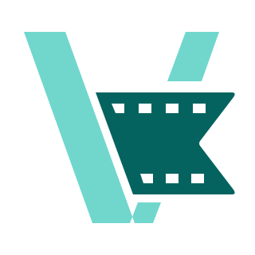
02 / A CLEARER FILM CUE
Small perforations make the material recognizable.
A slightly softer finish for the film and cut.
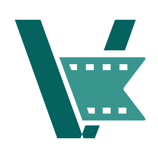
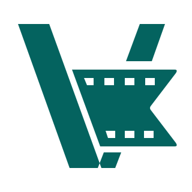
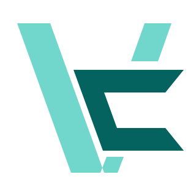
03 / STRONGER VC MONOGRAM
A deeper opening brings the C into focus.
Angled ends retain the suggestion of a physical cut.
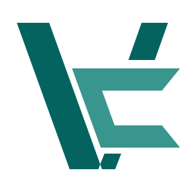
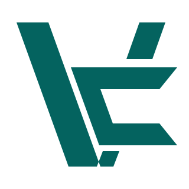
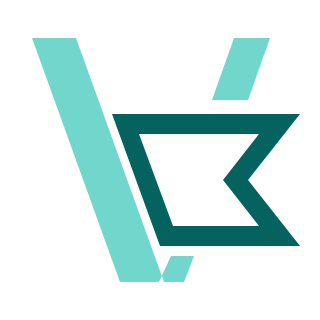
04 / LIGHTER, MORE OPEN
An outlined film ribbon balances the solid V.
More breathing room around the cut and blade.
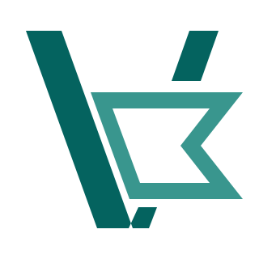
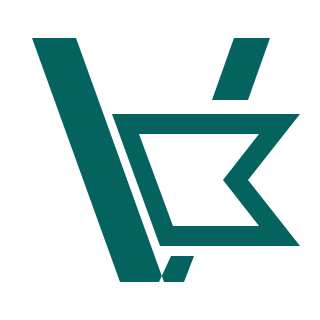